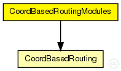
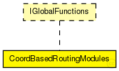

This documentation is released under the Creative Commons license
This documentation is released under the Creative Commons license(no description)

The following diagram shows usage relationships between types. Unresolved types are missing from the diagram. Click here to see the full picture.
The following diagram shows inheritance relationships for this type. Unresolved types are missing from the diagram. Click here to see the full picture.
| Name | Type | Default value | Description |
|---|---|---|---|
| coordBasedRouting.areaCoordinateSource | string |
@display("i=block/users"); bool enabled; |
|
| coordBasedRouting.CBRstartAtDigit | int |
start at this digit using CBR |
|
| coordBasedRouting.CBRstopAtDigit | int |
stop at this digit using CBR int coordCalcRuns; // How many runs will be started with random coordinates when calculating a node's coordinates? double waitForLandmarks @unit(s); // If not enough landmarks are available yet: Wait how long until next try? bool onlyCoordFault; // only coord measuring RTTs should be manipulated int coordCheckPercentage; // Sets the Range (in Percent) for which malicious computed Coordinates are allowed |
module CoordBasedRoutingModules like IGlobalFunctions { submodules: coordBasedRouting: CoordBasedRouting { parameters: @display("i=block/users"); } }
This documentation is released under the Creative Commons license